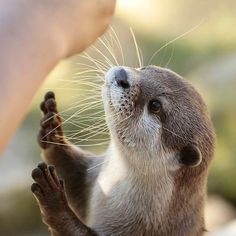

PetCare
PetCare
PetCare
PetCare



En adopción:
Bruno, nuestro encantador Bulldog, es un compañero leal y cariñoso que roba corazones con su
mirada
tierna y su personalidad amigable. Con su aspecto distintivo y su naturaleza adorable, es el
compañero
perfecto para cualquier familia que busque amor y diversión.